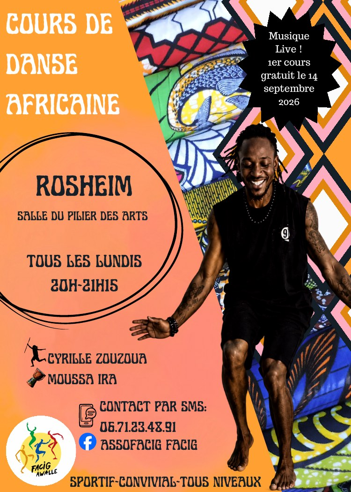

Saison 2026-2027
Cours de danse africaine à Rosheim
Sportif, convivial, tous niveaux — danse africaine traditionnelle accompagnée de percussions live.
Le rendez-vous du lundi
Envie de découvrir la danse africaine ou de poursuivre votre pratique dans une ambiance conviviale ? Les cours FACIG Awâllé sont ouverts à tous les niveaux.
- Jour
- Tous les lundis
- Horaire
- 20h00 à 21h15
- Lieu
- Salle du Pilier des Arts — Rosheim
- Danse
- Cyrille Zouzoua
- Percussions
- Moussa Ira — musique live
- Premier cours
- 14 septembre 2026 — gratuit
- Saison
- 32 cours, de septembre à juin
- Tarif
- 250 € pour l'année — cours + adhésion annuelle à FACIG Awâllé

L'esprit du cours
Danse, rythme et partage
La présence des percussions live crée un échange direct entre danse et musique, au cœur de la pratique.
💃
Danse africaine traditionnelle
Une pratique dynamique qui engage le corps, le rythme et l'écoute.
🥁
Percussions live
Le cours est accompagné par Moussa Ira, pour une relation vivante entre danseur et musicien.
🙌
Tous niveaux
L'objectif est de pratiquer et progresser dans une ambiance conviviale, sans esprit de compétition.